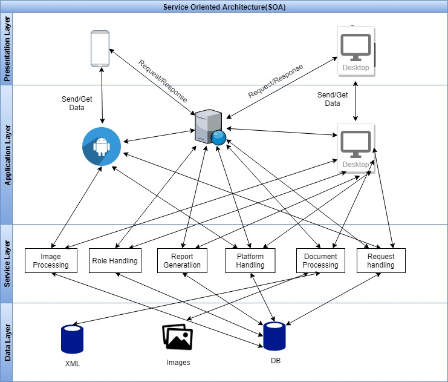
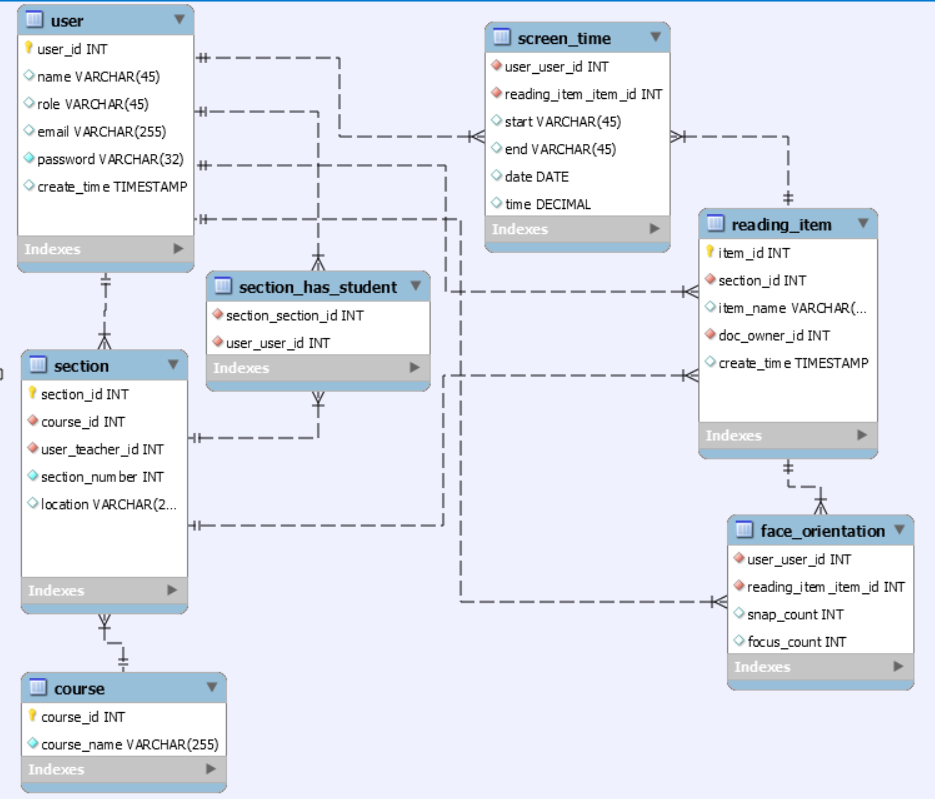

Software Design Specification
1. Architectural Design
2. Component Design
2.1 Components Overview
We will be giving a basic overview of the various components to be used in our system.
2.2 Database
SqLite will be used as our database software for Hand held software application and PostgreSQL will be used for our web applications. To represent various data from our project, we will be using tables included within the database software.
2.3 Server Software
Through our server software, we will be able to directly manipulate the contents of our database system based on commands provided from the server procedure proxy.
2.4 Server procedure proxy
we will be provided an interface for us to request information or submit updates to the server through the server procedure proxy. The clients (Teacher) will be given limited access to the server so that they can update the contents._
2.4 Client Software
The client software on which we will present our project will either be on a desktop computer or a hand held device. The software will have two general purposes so that the users can easily update information on the project. Our users will mainly consist of two variants, (Teacher and Student). So for this the software will mainly consist of two interface to accomodate the two different variants.
-
Hand held Client Software
The hand held client software will allow both type of users to view their varient of the software and they can also make changes and updates relevent to the inteface assign to them. -
Desktop Client Software
The Desktop client software will allow both type of users to view their varient of the software and they can also make changes and updates relevent to the inteface assign to them.
3. Class Diagram
The image below is the High Level UML Diagram for our classes:

4. Class Description
In the previous section, we outlined the classes that will be used for this project. In this section, we will describe each of these classes, for better understanding.
-
Teacher
This class stores teacher information, which is one of the main user class of the application.They can create and upload reading assignments for students.
-
Student
This class stores the students information.
-
Dashboard
Used to store and generate report to the teacher.
-
Course
This class stores the course information like course-id, course name.
-
To_read
To store which asssignment for which course with course-id, time etc in this class.
-
To_read_Student
this class stored student-id with course assignments and date.
-
Section
Used to store all the section of each courses.
-
Distribution_list
this class stored tracking assignments data.
-
Section_Student
To store which students are takes which section.
5. Database Design
The image below shows various relationships between the entities of our database (ER Diagram)

6. API Listing & Details
- PyGaze for Iris Movement.
- REST for client and server communication.
- TensorFlow API for android application.
- Custom APIs developed by us for inter-service connectivity
7. Sequence Diagram
The image below is the Sequence Diagram :

8. Development(Work) Plan
- Amzad is the manager for mobile platform development. He will make decisions on the framework to be used and develop the mobile app.
- Akhtar is the manager for image-processing issues and iris tracking. Akhtar is responsible for the face-recognition algorithms and background removal.
- Meckayel is the front-end manager. He will be rresponsible for the UI design and the related works.
- Istiaq is the API manager. He is responsible for dealing with the APIs and resolving all sorts of issues related with the connections between the different parts of the system.